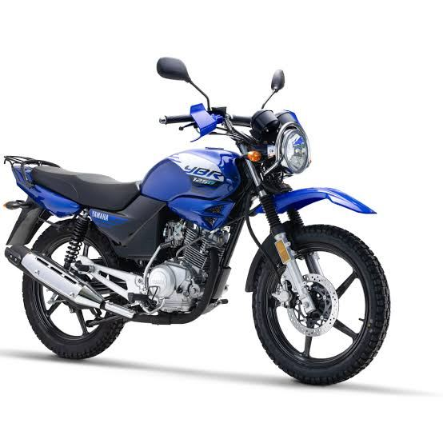
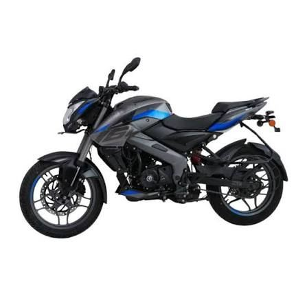
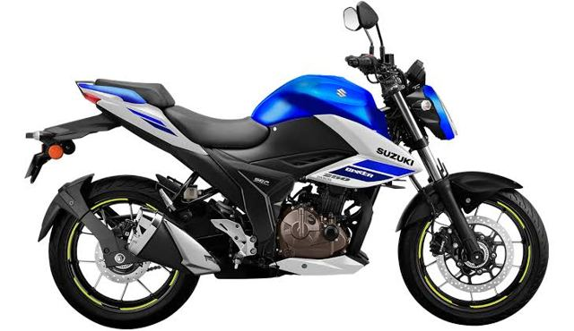

Transporte diario y reparto en calles con mucho tráfico. Toca una marca para ver más.
Muy extendida en trabajo y reparto.

Por precio y consumo.

Deportivas y de uso diario.

Modelos de calle y de trabajo.